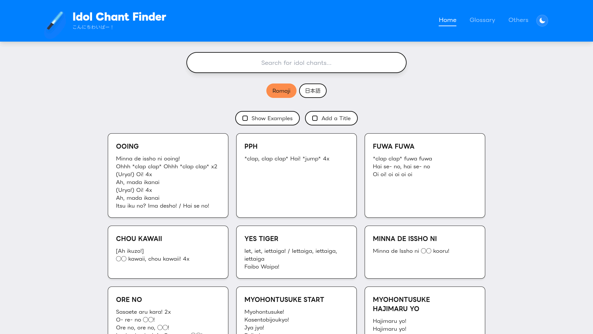

A centralized hub for wotagei culture

Next.js
React
Tailwind CSS
Vercel
Inspired by wotagei, this website solves the problem of finding and organizing chants, which I and others in the community have historically struggled with. It provides a centralized, easy-to-use platform for learning wotagei calls and mixes.